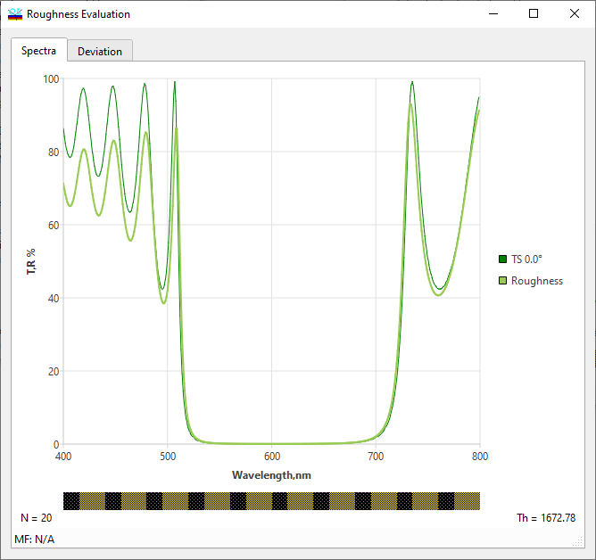
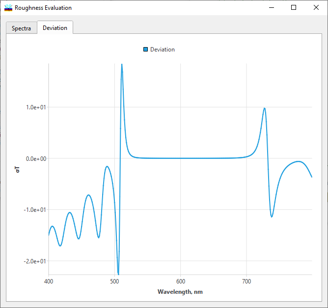

Interface Roughness Analysis
Interface Roughness Analysis
Navigation: OptiLayer Menu Commands > Analysis Menu > Interface Roughness >
Interface Roughness Analysis
` <roughnesses.html>`__ ` <idh_menu_analysis.html>`__ ` <color_roughness_evaluation.html>`__

The Interface Roughness analysis option allows for evaluating the influence of small-scale and large-scale interface roughness on design spectral characteristics. The concept of small-scale and large-scale root mean square (RMS) roughness is discussed in the papers:
A. Tikhonravov, M. K. Trubetskov, A. A. Tikhonravov, and A. Duparre, “Impact of surface roughness on spectral properties of thin films and multilayers” in Optical Interference Coatings, OSA Technical Digest Series (Optical Society of America, 2001), paper ThB5. http://www.opticsinfobase.org/abstract.cfm?URI=OIC-2001-ThB5
A. V. Tikhonravov, M. K. Trubetskov, A. A. Tikhonravov, and A. Duparre’, “Effects of Interface Roughness on the Spectral Properties of Thin Films and Multilayers,” Appl. Opt. 42, 5140-5148 (2003) http://www.opticsinfobase.org/abstract.cfm?URI=ao-42-25-5140
The results of the Interface Roughness Analysis are presented in the Roughness Evaluation window. In some cases, it is more convenient to study just deviations in spectral characteristics due to roughness effects. These deviations are displayed on the second tab of this window.

See also: